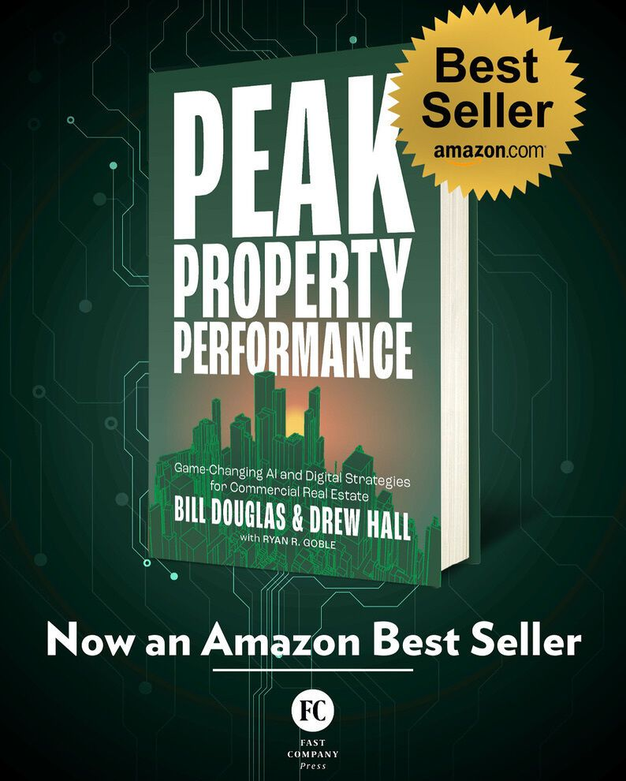

The CRE Strategy Playbook for Data, Digital & AI.
For commercial real estate owners who want control, NOI growth, and AI readiness — without the vendor lock-in tax.

Most buildings aren't failing. They're falling short.
Data ownership + digital infrastructure ownership + AI = actionable intelligence.
Equipment isn't intelligence.
It's about owning that data, owning your networks, and turning both into insights you can act on. The difference between having equipment and having intelligence.
One specialist won't get you there.
You can't win a championship with a single specialist. From property managers to the CFO, your whole team needs to align on data ownership for performance gains, operational efficiencies, and competitive advantage.
The winners aren't the ones with the most buildings.
They'll be the operators who harness their data to drive efficiencies and create new revenue streams — and who treat data and digital infrastructure as a strategic asset. The Playbook shows you how.
“This isn't just another tech book — it's a masterclass in creating value through data and digital infrastructure. After implementing the OpticWise methodology at our 200-acre Aspiria campus, I can attest: These strategies work.”
Chad J. Stafford, President, Occidental Management, Inc.
The 5C™ Framework for Peak Property Performance®
Five strategic plays that take property data from fragmented to compounding. Built on decades of operating CRE — translated into a plan any owner can run.
Define success metrics, map ownership, identify leakage, document what's trustworthy and portable.
Establish secure, owner-controlled connectivity that repeats property-to-property.
Capture and normalize high-fidelity usable data into a consistent reusable model.
Govern identity, access, privacy, lineage, retention, and rules of use.
Enable any decision engine or LLM to act under owner permissions.
Intelligence that compounds across the portfolio. Not just one building.
The CRE Strategy Playbook for Data, Digital & AI.
Published by Fast Company Press. A complete framework for transforming commercial properties through data ownership and digital infrastructure — with implementation playbooks, real-world patterns, and tools you can use immediately.
Built for everyone with a stake in your portfolio's performance.
Owners. Asset managers. Property managers. IT leaders. The Framework gives every role its own play — without losing sight of the whole game.
Own the foundation that determines NOI, control, and AI readiness. Stop renting decisions from your vendors. Lead the long game from the skybox.
See Your Role →Lead bold ROI plays, deepen your data fluency, and surface insights to investors that drive smarter capital allocations across your portfolio.
See Your Role →Less reactive firefighting. More proactive insight. Run buildings with a systemic view — and stop translating chaos into spreadsheets.
See Your Role →One owner-controlled standard. Real governance. Vendors plug in under your rules — not the other way around. The play that ends shadow networks.
See Your Role →Three operators. One playbook.
Bill Douglas, Drew Hall, and Ryan R. Goble — decades of operating CRE technology, distilled into a plan any owner can run.
Three ways in.
Whether you're scouting, training camp, or game time — there's a way to start today.